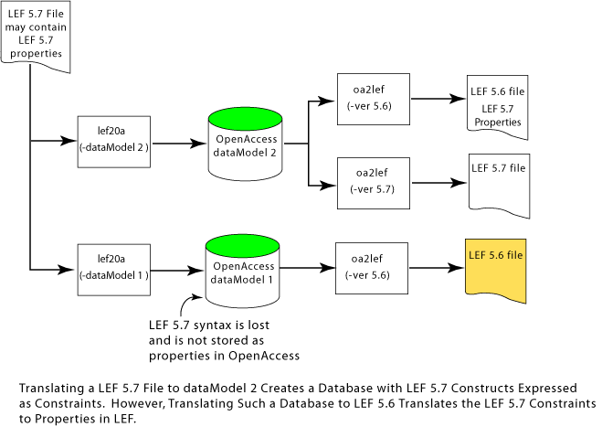

|
 |
 |
 |
|
|
|
|
This documentation set expresses how OpenAccess objects map to LEF and DEF statements and constructs. LEF statements and constructs are organized separately from DEF statements and constructs. Each have separate index pages that list the statements in alphabetical order.
The translators accomodate several LEF and DEF versions of syntax from 5.3 forward to the current version. When you translate LEF and DEF to an OpenAccess database, the combination of the LEF/DEF syntax version, and the dataModel you specify, determine whether and how the LEF/DEF constructs are mapped to OpenAccess.
Syntax version 5.6 supported the early incorporation of LEF 5.7 syntax by including the latter as properties. The way that version 5.7 syntax is represented in a LEF version 5.6 file is by prefixing the 5.7 syntax with the PROPERTY LEF57 keywords. If a version 5.6 file contains LEF 5.7 properties, translating the file to OpenAccess using dataModel 1 results in the LEF 5.7 properties being stored as properties in the database. The following figure illustrates how the 5.7 properties translate from LEF to OpenAccess and back to LEF. Notice that when LEF 5.7 syntax is expressed as properties in an OpenAccess database, translating the database to LEF 5.7 produces a 5.7 version LEF file but the 5.7 syntax is represented as properties.
Translating a LEF 5.6 file containing LEF 5.7 properties to OpenAccess, using dataModel 2 or greater, results in the properties being stored in the database as constraints. Sometimes a LEF construct or property cannot be represented in OpenAccess. LEF constructs with no correspondence in OpenAccess are ignored and a warning is issued during translation. The following figure shows how a LEF 5.6 file with LEF 5.7 properties translates to an OpenAccess database using dataModel 2, and it shows how such a database translates back to a version 5.6 or 5.7 LEF file.
A LEF version 5.7 file may contain both normal LEF 5.7 syntax and property versions of the 5.7 syntax. The translation option must be set for dataModel 2 or greater in order to translate LEF 5.7 normal syntax. Both the normal 5.7 syntax, and the property versions of 5.7 syntax, are stored in OpenAccess. The LEF 5.7 information stored in OpenAccess depends on the database dataModel used during translation. The dataModel 2 database stores normal LEF 5.7 syntax as constraints and stores LEF 5.7 properties as properties. A dataModel 1 database can only store the LEF 5.7 properties. This following figure shows several translation scenarios.
If you translate an OpenAccess database to LEF version 5.7, the LEF file contains only normal 5.7 syntax (not property versions of the 5.7 syntax). If you translate an OpenAccess database to LEF version 5.6, OpenAccess objects that correspond to 5.7 constructs are written to the LEF file as LEF 5.7 properties. Therefore, roundtrip translations from LEF to OpenAccess and back to LEF can produce LEF output that is different from the LEF input. The following table summarizes roundtrip translations for different scenarios.
| LEF Input Version | OpenAccess dataModel | LEF Output Version | LEF Output Format |
|---|---|---|---|
| 5.6 + 5.7 properties | 1 | 5.7 | 5.7 properties |
| 5.7 + 5.7 properties | 1* | 5.6 | 5.6 + 5.7 properties |
| 5.7 + 5.7 properties | 1* | 5.7 | 5.7 properties |
| 5.6 + 5.7 properties | 2 | 5.6 | 5.6 + 5.7 properties | 5.6 + 5.7 properties | 2 | 5.7 | 5.7 |
| 5.7 + 5.7 properties | 2 | 5.7 | 5.7 |
* LEF 5.7 properties can be represented in OpenAccess dataModel 1, but LEF 5.7 normal syntax cannot be represented in dataModel 1. If you create an OpenAccess database from LEF, and dataModel is set to 1, any LEF 5.7 properties contained in the input file are translated to properties in OpenAccess. Translating such a database to LEF 5.7 produces an output file containing the 5.7 properties.

Copyright © 2003-2008
All rights reserved.